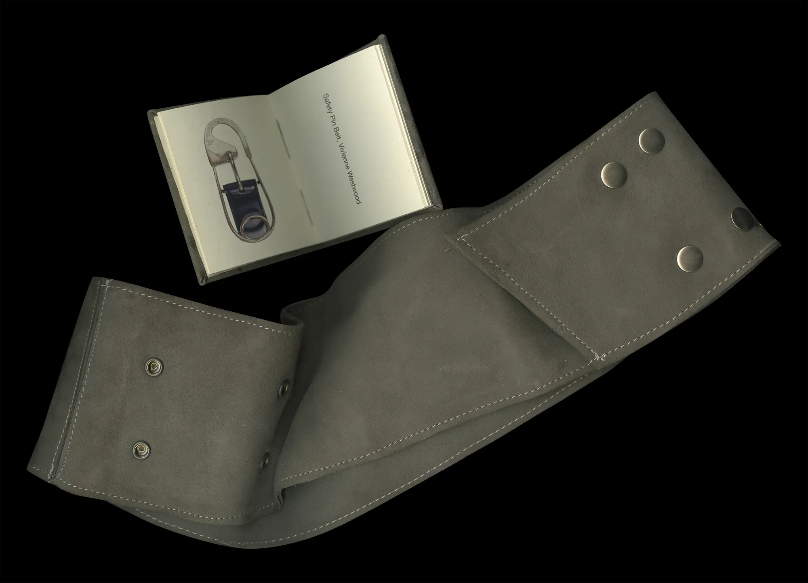
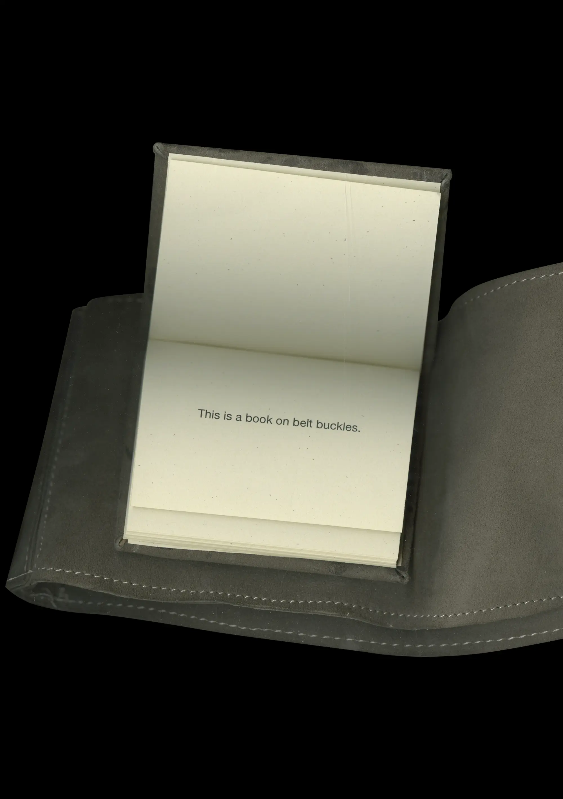
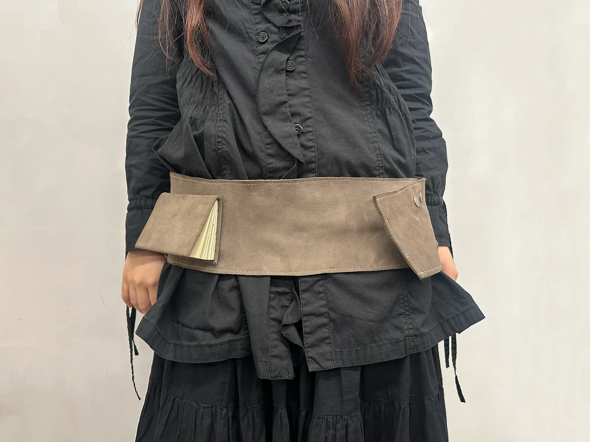
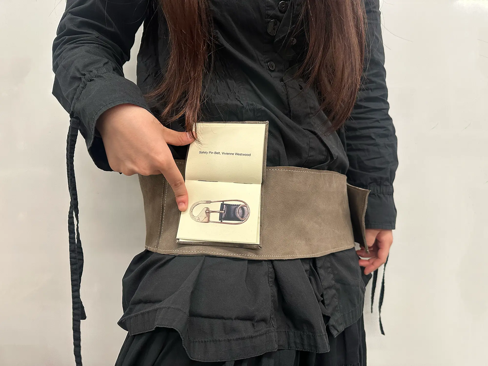
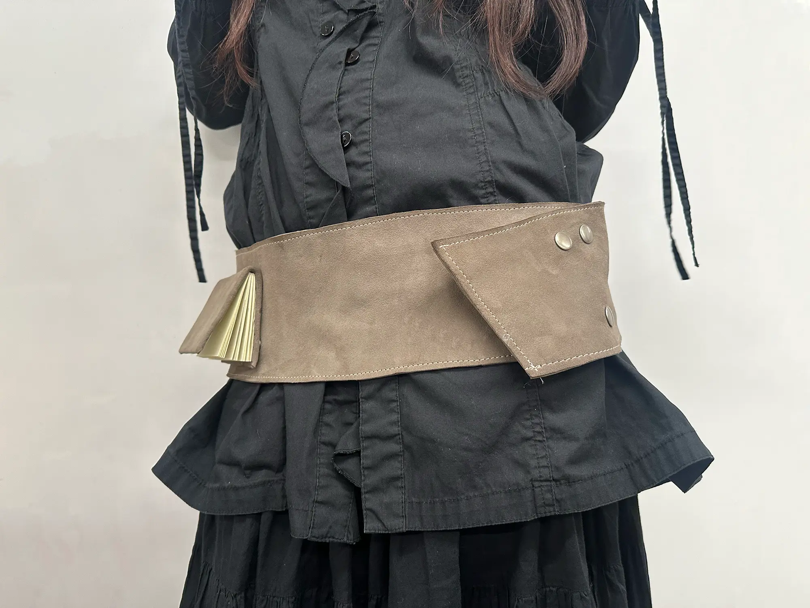

On Belt Buckles
Print
2024
An exploration of the artist's book, connecting the content to the form. The book contains pictures of belts, each accompanied by a short description with the name of the belt and the brand. The book is hard-cover bound with suede leather, with snaps that allow it to be attached or detached from the belt.
Made with help from Karissa Poon
2024
An exploration of the artist's book, connecting the content to the form. The book contains pictures of belts, each accompanied by a short description with the name of the belt and the brand. The book is hard-cover bound with suede leather, with snaps that allow it to be attached or detached from the belt.
Made with help from Karissa Poon